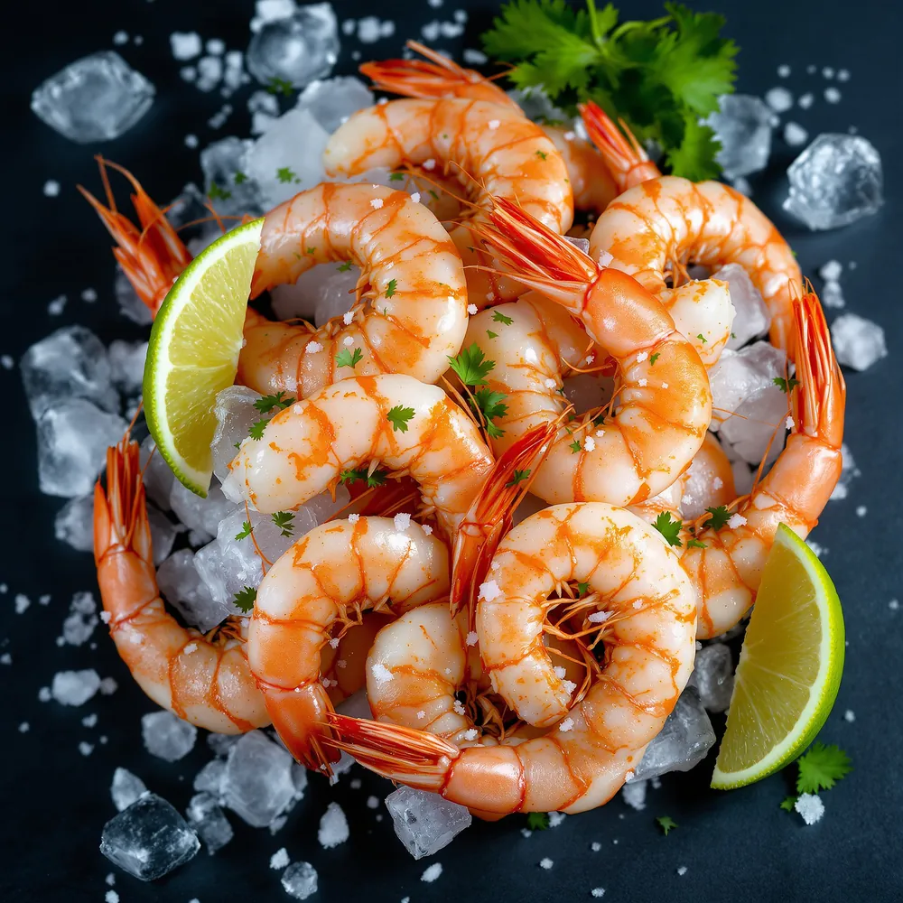
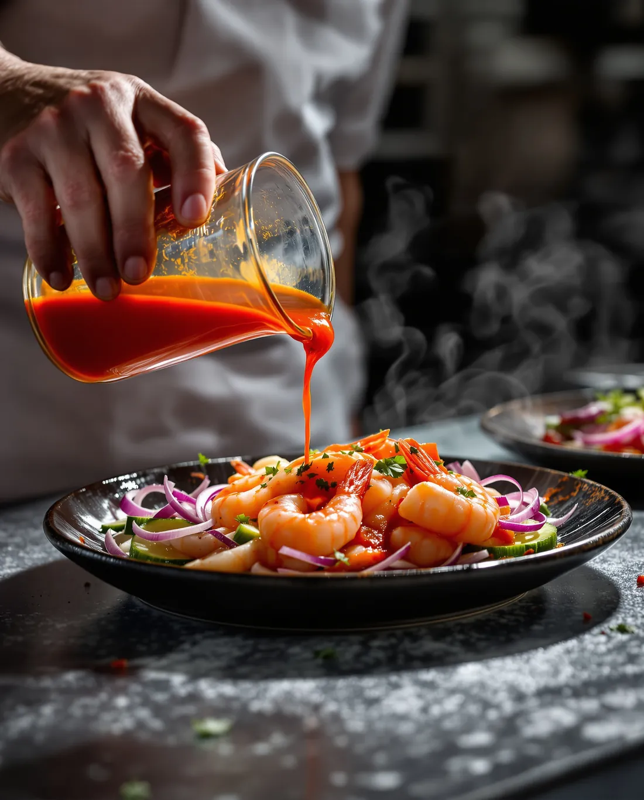
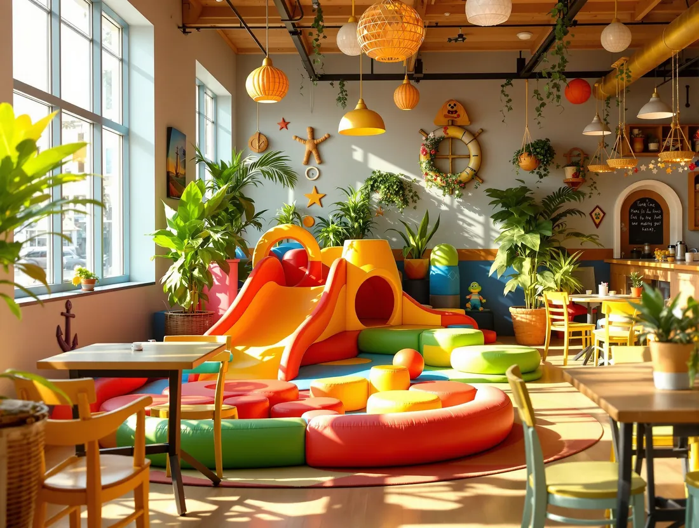

01El producto manda
Si la pesca del día no llega como debe, el platillo no sale. Las piezas enteras se cotizan por kilo justamente por eso.

Restaurante SAVE lleva ese nombre en honor a Guasave, Sinaloa. Todo lo demás —las recetas, el producto, el modo de servir— viene del mismo lugar.
La propuesta
Ofrecemos una propuesta de sabor distinta, con recetas tradicionales de la playa Las Glorias y creaciones gastronómicas originales y exclusivas, tanto en platillos fríos como calientes, pensadas para satisfacer a los paladares más exigentes.
Nuestros pescados y mariscos son traídos directamente desde el Mar de Cortés, lugar donde se obtienen las mejores variedades de México. Calidad de exportación para consumo nacional.


El ambiente
Un sabor único, ambiente de playa, la alegría y la hospitalidad de la gente de la región costera del norte de Sinaloa: esos son los factores que quisimos traer a Guadalajara.
Lo hicimos en un restaurante con todas las comodidades y una atención de primer nivel, con un ambiente 100% familiar y lo último en tecnología de audio y video, pero sin perder la identidad y el sabor de la palapa.
Cómo trabajamos

01Si la pesca del día no llega como debe, el platillo no sale. Las piezas enteras se cotizan por kilo justamente por eso.
Los aguachiles, ceviches y tostadas se preparan cuando se ordenan. El limón hace su trabajo en la mesa, no en la cámara.

03Área de niños, estacionamiento, valet gratis y los partidos en pantalla. Que nadie tenga un motivo para irse temprano.
 04
04
El mismo estándar que se exige para salir del país, servido aquí. Con Distintivo H que lo respalda.

Reconocimiento de la Secretaría de Turismo a los establecimientos que cumplen los estándares de manejo higiénico de alimentos.

Distintivo ESR por nuestro compromiso con el equipo, la comunidad y el aprovechamiento responsable del producto del mar.
Reserva tu mesa en cualquiera de nuestras seis sucursales.